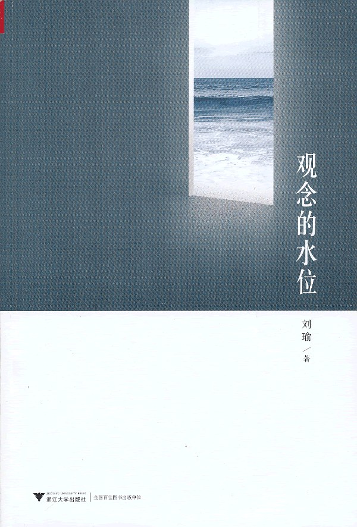

《观念的水位》

总体观点
政治学者刘瑜在随笔集《观念的水位》中，以细腻生动的敏锐观察和兼具学理纵深的通俗笔触，记录了转型期中国与全球政治变迁中的思想波澜。
核心洞见：制度的变迁表面上是权力博弈与法条更替，实质上取决于全社会“观念的水位”。当公众对权利、公正、程序与常识的认知水位普遍抬升，专制与特权的旧堤坝便终将被历史的潮流冲刷瓦解。
全书横跨中外社会热点、经典政治著作与艺术光影，破除“国民素质论”迷思，阐发了恶之平庸、法治代价、容忍异见的真谛，为现代公民社会的培育提供了清醒的理性路标。
核心观点
-
1. 制度的根基是观念，观念的水位上升是不可逆的历史潮流
决定一个国家走向的不仅是宪政文本或经济指标，更是普通大众对公平、正义与人权的常识认知基准线。
几十年前官员公车私用被视为理所当然，如今在网络舆论与纳税人意识觉醒下，哪怕公车送孩子上学都会招致全网问责曝光。 -
2. 破除“国民素质低下所以不配享用民主法治”的倒果为因迷思
公民素养不是关在书斋里被动培训出来的，而是在参与公共事务、行使权利并承担后果的真实实践中淬炼出来的。
小镇居民通过组织业主委员会维权打官司，哪怕初期出现争吵甚至混乱，也在反复博弈中学会了遵守程序、按规则投票。 -
3. 平庸之恶往往源于个体的放弃思考与对体制恶行的麻木协同
最可怕的罪恶往往不是狂热恶魔犯下的，而是成千上万缺乏反思能力的普通职员在履职借口下协同完成的。
二战后艾希曼在耶路撒冷受审时坚称自己只是按规章制度办事、认真安排运送犹太人的火车时刻表，展现了惊心动魄的平庸之恶。 -
4. 法治的真谛不仅是惩恶扬善，更是给权力套上程序正义的紧箍咒
法治首先是用来防范政府和司法机关滥用暴力，哪怕为了保护罪大恶极的嫌疑人不被刑讯逼供，也必须坚守程序正义。
辛普森案中检方因警方违规取证被判无罪，展现了现代法治宁可放过个别真凶也不允许国家机器任意践踏宪法程序的底线原则。 -
5. 真正的民主政治是嘈杂妥协的世俗生活，绝非一呼百应的救世主狂欢
成熟的民主必然充满利益集团的拉锯、无休止的公开辩论与各退一步的折中方案，这恰恰是防范极端独裁的安全阀。
英国下议院辩论中执政党与反对党议员面红耳赤唇枪舌剑甚至拍桌子互嘲，但走出议会大厅依然按宪法程序和平共处。 -
6. 捍卫言论自由的真正考验，在于能否容忍那些你极度厌恶的言论
言论自由不是为迎合大众口味的主流声音设立的，而是用来保护刺耳、边缘甚至让人不适的少数派异见的坚固护盾。
美国最高法院判定在反战示威中公开焚烧国旗受宪法第一修正案保护，大法官指出保护自由的最好方式不是强求尊敬，而是允许抗议。 -
7. 拥抱复杂性与灰度，告别非黑即白的激进标签战
公共讨论最忌讳的是给论敌扣帽子搞道德审查，只有回到事实、数据与制度细节的理性推敲，社会才能走出撕裂的恶性死循环。
在讨论全民医保或最低工资政策时，放弃“资本家走狗”或“民粹暴民”的人身攻击，转而推演加税后对小微企业雇佣与财政赤字的具体精算。
全书思维导图 · 知识脉络树
全书结构
-
观念•此处
聚焦当代中国转型期的公共事件、舆论热点与常识重建，反思国民素质论、民意虚假表达与网络标签战，探寻法治与公正何以可能。
评析轰动一时的公共治安热点与药家鑫案争论，指出围观群众对特权的愤怒不仅是情绪宣泄，更是民众对法律面前人人平等的强烈饥渴。 -
观念•别处
放眼全球政治转型图景，考察英国议员报销丑闻、俄罗斯威权回归、东欧剧变二十年与亚洲民主阵痛，提供文明发展的国际参照系。
详述英国议员因为报销几英镑的倒霉鸭舍被媒体曝光严厉追责，展示成熟法治国家对公权力纳税人监督的严苛与不依不饶。 -
书
评析阿伦特、福山、哈耶克、托克维尔等思想大师的政治学经典著作，在书卷与现实之间搭建桥梁，深化对国家能力与自由本质的理解。
借评述托克维尔《旧制度与大革命》，指出革命往往不是发生在压迫最深重之时，而是发生在改革启动、期望骤升之际的危险拐点。 -
电影
借助《窃听风暴》《朗读者》《通天塔》等经典电影文本，探讨平庸之恶、极权监控对人性的异化，以及在历史幽暗时刻个体救赎的艰难。
解构东德秘密警察在长年监听作家过程中良知被艺术悄然唤醒的故事，展现人性幽光穿透极权冰壳的微弱力量。 -
剩下的
收录偏向私人生活感悟的抒情散文，在政治冷酷宏大的议题之旁，保留一份对具体生命的温情、对时间的敬畏与生活之爱。
漫步于剑桥老街与波士顿秋叶中，写下对生命流逝的感怀，展现知识分子在激烈论战之外温和通透的生命底色。